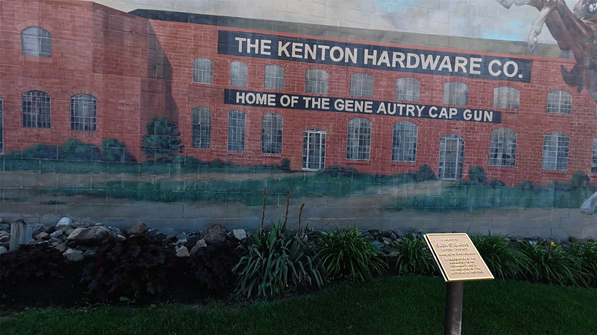

Gene Autry Park
A small roadside park with an unexpected connection to one of America's best-known western entertainers.

Our Visit
We discovered Gene Autry Park while traveling Ohio's backroads and couldn't resist making a stop.
It's one of those places that many people drive past without ever realizing the story behind its name.
Those unexpected discoveries are exactly what GO-CA-TION is all about.
A Little History
Gene Autry Park honors legendary entertainer Gene Autry, whose career included music, radio, motion pictures, and television.
Although it's a modest roadside park, it preserves a unique piece of local history and gives travelers one more reason to slow down and explore.
Sometimes the smallest stops become the most memorable.
Come Along With Us
Watch the Gene Autry Park.
▶ Watch on YouTubeNearby Discoveries
One of the best parts of exploring Ohio is never knowing what you'll find around the next bend. Small roadside parks like this often become unexpected highlights.
As GO-CA-TION grows, this page will connect with more unique roadside stops across Ohio.